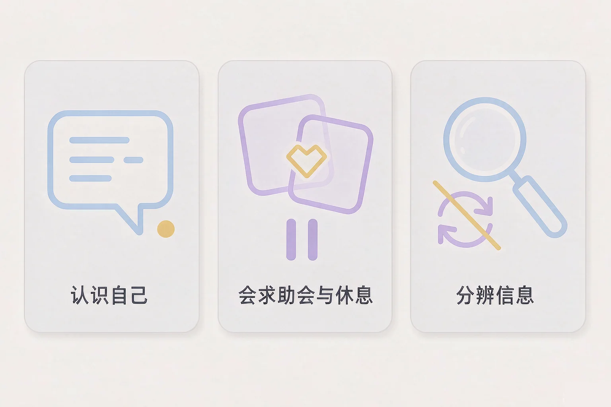
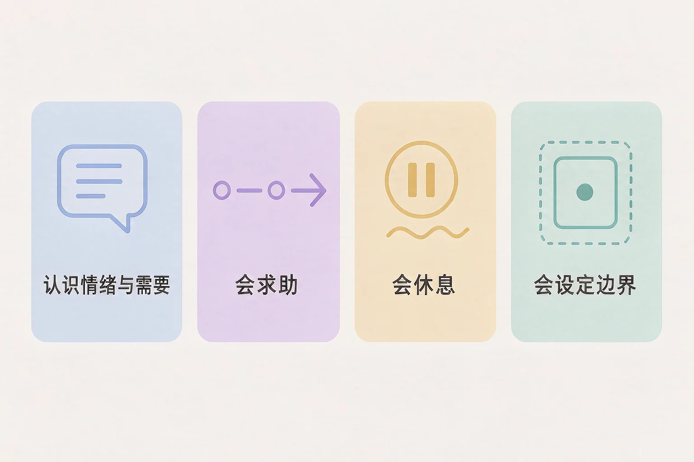
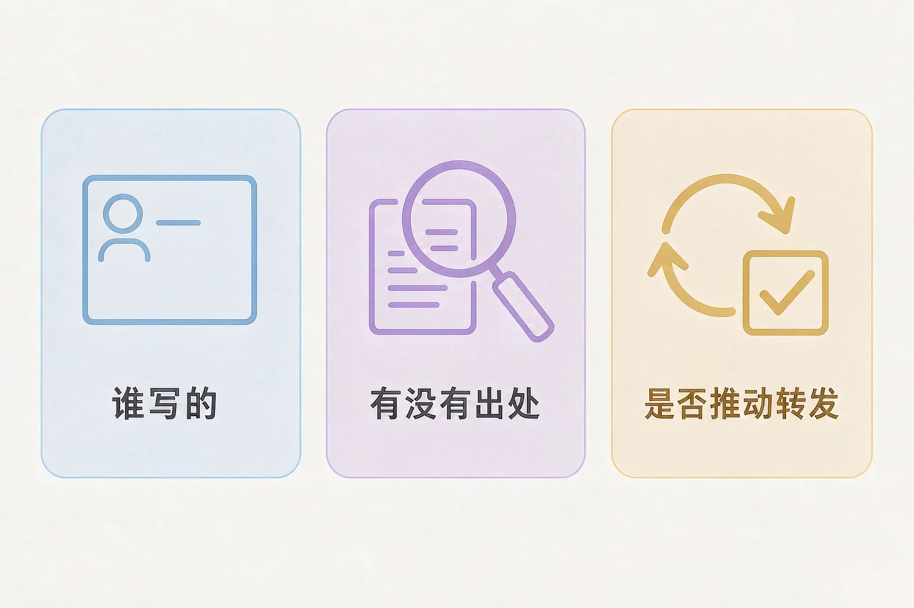

Gallery
v1.0.0 · skill v7.22.0
高中高三 · 抗挫与适应
有什么东西学会了，可以一直用下去？

选一个最贴近你最近状态的困惑，后面的内容都会围着它展开。
选择或输入后，这节课会围绕你的问题展开。
先凭直觉选一个，选完立刻看到解释——错了也没关系，正好知道要重点听哪里。
1. 心里有点堵，但说不上来怎么了。下面哪种做法更贴近「认识自己的情绪与需要」？
起名字是让模糊的感觉变得可以处理的第一步，再看它想要什么，就知道能做什么。错因提醒：常见错误是误认为不去看就等于没事——感觉不会因为不被看就消失，它只会换一种方式出现。
2. 关于「会求助」，下面哪种说法更合适？
把状态和需要说清楚，别人才能真正帮上忙。错因提醒：容易把「求助」搞混成「给别人添麻烦」——说清楚之后，大多数人其实很愿意帮。
3. 网上那种三道题测出你性格的测试，下面哪种看法更合适？
它给不了关于你的结论，但也不必因此紧张。错因提醒：误认为测试结果等于对自己的判断，容易用一个随机的标签把自己框住。
这四件事不复杂，也不需要什么条件。难的是记住它们可以用一辈子。
为什么要先学这个？你已经知道要好好照顾自己；但这句话太大，落到具体的一天里常常不知道做什么；所以把它拆成四件具体的事，每件配一个能立刻做的做法。
误认为会休息就是不够努力，会设边界就是不合群。其实这两件事做得好的人，往往能更久地做下去，关系也不容易积怨。

🔍 深层理解 换个角度再看一遍这件事，看看能不能说出背后的原理。
解释它：为什么给情绪起个名字有用？因为模糊的感觉最难处理。起了名字之后，它就从一团东西变成了一个可以回应的信号。
比较它：「会休息」和「不上进」看起来像同一件事，差别在于前者是安排好的，后者是撑不住之后的塌下来。
迁移它：这四件事不只在高中有用。以后上大学、工作、成家，遇到的还是这些题目，只是场景换了。
四个维度里，每个挑一到两条你愿意试的做法，再选一个看的时机。挑两条就够，做不到也没关系。
把清单抄下来：抄在一张纸上，或者存进手机备忘录。两周以后回看一次，只问一句：哪一条我真的做下来了？
网上的心理内容太多，学会分辨比记住内容更重要。分辨只需要三个问题。

误认为看到一条对得上的描述就说明自己就是这样的人。描述能对上，往往因为它写得足够宽——这也正是它不能当依据的原因。
需要帮助的时候，请走正规的路：学校的心理老师，或者正规医疗机构。这两条路都是正规且常见的，去找人本身就是一种照顾自己的能力。
六条你大概刷到过的内容，每条选一个判断。选完会给出解释——说它是流量内容，不是说它在骗你。
写下来，留给自己：最近有一条让你对号入座的内容吗？写下它，再用三个问题给自己一个判断。
情境：一位同学说，最近总觉得时间不够用，一停下来心里就有点慌，说不上到底在慌什么。我们陪他走一遍。
两个方向都容易走偏：一种是一次性给自己定七八条，两天后全部放弃；另一种是觉得必须先全部想通才能开始。中间那条路是：一次只加一条，做下来了再加下一条。
把期待放在合适的位置：这套做法不是要把你变成另一个人，也不保证每天都顺利。它能做到的是：在不好过的时候，多几个可以用的办法。
先凭直觉选一个，选完立刻看到解释——错了也没关系，正好知道要重点听哪里。
1. 「休息就是浪费时间，等忙完这一阵再好好歇」——这句话最需要改的地方是：
休息需要提前安排，而不是等撑不住了才允许自己停。错因提醒：常见错误是误认为休息是可以往后挪的奖励——挪到最后，常常是身体先替你停下来。
2. 关于「会求助」，下面哪种理解更合适？
说清状态加需要，别人才能真正搭上手。错因提醒：容易把「求助」搞混成「抱怨」——前者有明确的需要，后者说完之后双方都还是原地不动。
3. 你刷到一条内容，把某种性格描述得特别像你。下面哪种反应更合适？
能对上，常常是因为描述写得足够宽。错因提醒：误认为对得上就等于准确——一个能套住大多数人的描述，恰恰说明它不能用来判断单独的某个人。
五句最难开口的话，每句选一个说法。留意哪一种能说出口，又不至于把关系推远。
写下来，留给自己：挑一句最贴近你最近情况的，改成你自己的说法写在这里。一句就够。
先凭直觉选一个，选完立刻看到解释——错了也没关系，正好知道要重点听哪里。
1. 深夜十一点半，同学发来一条很长的消息，想找你说说话。你明天一早有事。下面哪种做法更合适？
给一个明确的时间，同时问一句急不急，两边都照顾到了。错因提醒：常见错误是误认为边界和关心只能二选一——说清时间恰恰让关心变得可持续。
2. 你最近总是觉得有点悬着，睡觉和吃饭都受了影响。下面哪种做法更合适？
去找正规渠道是一种能力，不需要先把事情说得多严重才配去。错因提醒：容易把「再撑一撑」搞混成「坚强」——撑久了再找人，往往要多花好几倍的力气。
3. 朋友请你帮忙做一件事，你这次确实做不了。下面哪种说法更合适？
说清这次不行，同时给一个可以的时间。错因提醒：误认为拒绝一定要彻底，或者答应了再推掉更省事——后者往往比直接说更伤关系。
回到开头那个说不上来的时刻：当你觉得有点堵、又说不清怎么了，不必先解决它。先给它起个名字，再看它想要什么——能做的第一件事，往往就从这里出现。
记忆锚点：三个词帮你记住这节课——先起名、会开口、留边界。
给别人讲一遍：请用「先起名、会开口、留边界」这三个词，把自己清单里最先想做的那一条讲给一位同学听。
三层练习，做完第一、二层就算通关；第三层留给愿意继续探索的同学。
⭐ 基础巩固（必做）
⭐⭐ 能力应用（必做）
⭐⭐⭐ 迁移挑战（选做）
左边是学它之前要先会的，右边是学会之后可以继续探索的，下面是同一领域的伙伴知识。
图谱正在加载：首次进入需下载知识索引（约 1–3 秒），加载完成后本行会自动消失。